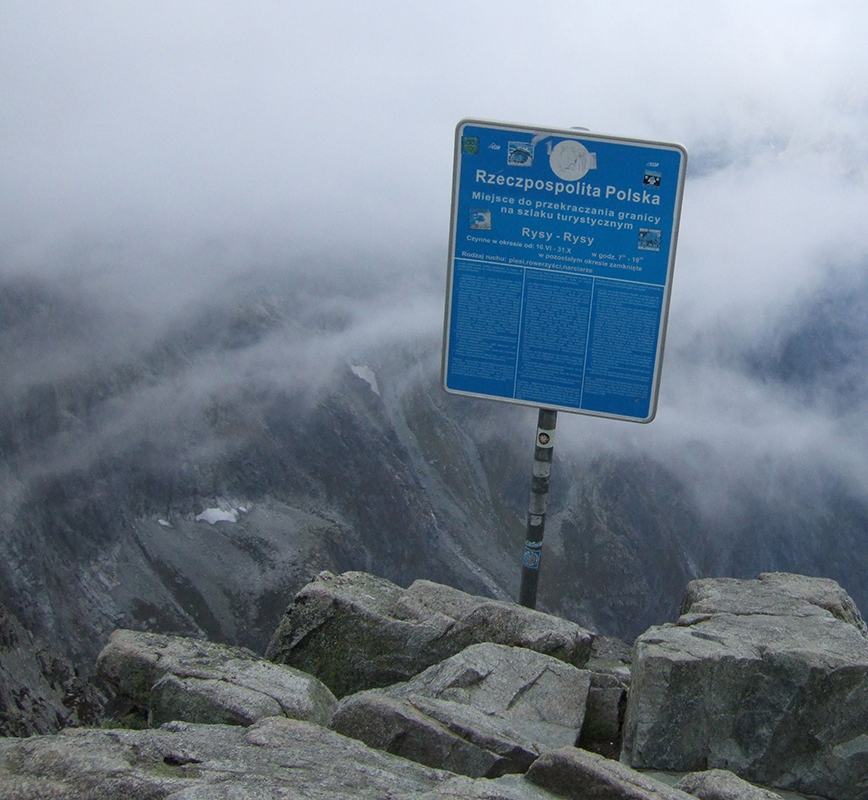
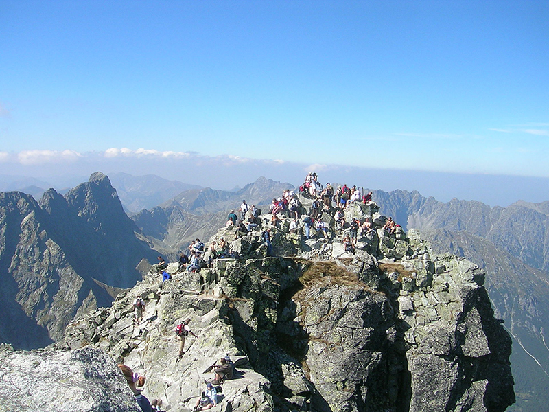

История горы
Ры́сы (польск. и словацк. Rysy) — гора, расположенная на польско-словацкой границе в Высоких Татрах. Имеет три вершины, из которых самая высокая — средняя — находится на территории Словакии (2503 м), а северная является самой высокой точкой Польши (2499 м).

Первое задокументированное восхождение на гору было совершено в 1840 году Эде Блази и проводником Яном Руманом-Дречным, а в 1884 Теодор Вундт и Якоб Хорвай осуществили первое зимнее восхождение. В августе 1968 года активисты подпольной
Топография горы
Гора имеет три вершины. Северо-западная, средняя по высоте находится на границы Польши и Словакии. Её высота, по разным оценкам, составляет от 2 498,7 до 2 499,6 метров[2] (обычно читается равной 2499 метрам)[3]. Эта вершина является наивысшей точкой Польши. Наиболее точно высота этой вершины была измерена в 1988 году: была определена точным тригонометрическим методом нивелирования независимо с польской и словацкой стороны высота точки на 60 см ниже вершины. В результате были получены результаты 2498,724 метра со стороны Словакии и 2498,724 метра со стороны Польши, то есть высота самой вершины составила 2499,3 метра[4].
Первые измерения высоты были проведены в середине XIX века очень неточным барометрическим методом. Измерение было проведено для всей горы, а не для отдельных вершин, в результате было получено значение в 2309 метров, что сильно меньше действительного. В результате Свиница[pl] была признана высшей точкой «Новых Татр» (ныне польские Татры), первое измерение которой в 1867 году показало завышенный результат в 2336 м. Выполненное в 1870-х годах австрийские военные картографические измерения уже дали относительно точные результаты[5]. В 2010-х годах спутниковая геодезия позволила проверить и обновить ранее полученные значения. В 2019 году геодезисты из AGH в рамках исследовательского проекта «Сотня в короне» измерили высоты самых важных польских гор, объединив методы LIDAR (для первоначального определения потенциально самых высоких точек горы) и GNSS (для более точного измерения) для получения надежных результатов; в опубликованной работе они отметили, что ни один из этих методов сам по себе не был бы достаточным. Полученная ими высота пограничной вершины Рысы составила 2499 м над уровнем моря. (в системе высот Кронштадта) с допустимой погрешностью измерения 10 см[6][7].Несмотря на это, картографические заводы «Знакатура» и «Полкарт» представили самую высокую точку Польши на своих картах 2020 года с высотой 2500 м исключительно на основе данных Лидара, обосновав это наличием четырех точек в диапазоне 2499,8-2499,9 м (2500 м после округления до полных метров) в пределах двускатного купола северо-западной вершины. Издатели обратили внимание, что допускали погрешность в один метр в предоставленных высотах[8]. Однако указанные пункты находятся в пределах 3-4 метров от места нахождения пограничного поста, внесенного в Государственный реестр границ. Уже было замечено завышение высоты горы в данных Лидара: они были интерпретированы как результат присутствия людей на вершине во время лазерного сканирования и неправильной идентификации некоторых из полученных отражений (которые являются возможными отражениями лазерного пятна от людей) как изображения земли.[9]

Самая высокая из вершин (так называемая средняя) возвышается примерно на 1,5 м над пограничной вершиной, следовательно, ее высота колеблется приблизительно от 2500,2 до 2501,1 м[2] и расположена, как и самая низкая юго-восточная вершина (2472 м[10], согласно более точным замерам, 2473 м) на словацкой стороне. Высота высшей точки Рысы в 2503 м, о которой обычно сообщают в литературе и на картах, взята из старых австрийских измерений 1896—1897 годов и, безусловно, завышена[2]. Рысы характеризуются большой относительной высотой — более чем 1100 метров над поверхностью Морского Ока.
Флора и фауна
Вершина горы уникальна своей флорой. На высоте 2483–2503 м произрастает 63 вида цветковых растений[11]. Из редких растений произрастает Antennaria carpatica, Saxifraga retusa и Poa nobilis – встречающиеся помимо Татр лишь в немногих местах Польши[12].
На южных склонах остались Rupicapra rupicapra tatrica и Marmota marmota latirostris. Также здесь обитают несколько видов птиц и множество видов низших животных: насекомых и моллюсков. Вблизи вершины впервые был пойман эндемичное паукообразное Polonozercon tatrensis[13].
Примечания
- 20 czerwca 1970 r. Aresztowano działaczy „Ruchu” wycieczkinakresy (20 июня 2019). Дата обращения: 13 октября 2020
- Wykaz Szczytów – Korona Gór Polski Дата обращения: 13 октября 2020.
- Анела Маковская. Dynamika Tatr wyznaczana metodami geodezyjnymi - Варшава: Instytut Geodezji i Kartografii, 2003. — ISBN 83-916216-0-X.
- "Setka w Koronie" Projekt na 100-lecie AGH koronagor.agh.edu.pl. Дата обращения: 14 октября 2020.